CS865 Distributed
Software Development
|
|
Lecture 9 |
Tannenbaum and Van Steen Chapter 9
Security
Strategies for securing Distributed Systems
Generally very similar to techniques used in a non-distributed system, only much more difficult to implement
Difficult to get right, impossible to get perfect!
Security Topics
1. Providing a secure communications channel authentication, confidentiality and integrity.
2. Handling authorization who is entitled to use what in the system?
3. Providing effective Security Management.
4. Example systems: SESAME and e-payment systems.
Types of Threats
- Interception unauthorized access to data.
- Interruption a service becomes unavailable.
- Modification unauthorized changes to, and tampering of, data.
- Fabrication non-normal, additional activity.
Security Mechanisms
- Encryption fundamental technique: used to implement confidentiality and integrity.
- Authentication verifying identities.
- Authorization verifying allowable operations.
- Auditing who did what to what and when/how did they do it?
Key Point
Matching security mechanisms to threats is only possible when a Policy on security and security issues exists.
Example: The Globus Security Architecture (Chervenak et al., 2000).
- Globus is a system supporting largescale distributed computations in which many hosts, files, and other resources are simultaneously used for doing a computation.
- Also referred to as computational grids (Foster et al., 2001 1999).
- Resources in these grids are often located in different administrative domains that may be located in different parts of the world.
Globus Security Policy (Foster et al., 1998):
- The environment consists of multiple administrative domains.
- Local operations (i.e., operations that are carried out only within a single domain) are subject to a local domain security policy only.
- Global operations (i.e., operations involving several domains) require the initiator to be known in each domain where the operation is carried out.
- Operations between entities in different domains require mutual authentication.
- Global authentication replaces local authentication.
- Controlling access to resources is subject to local security only.
- Users can delegate rights to processes.
- A group of processes in the same domain can share credentials.
The Globus security architecture:
o consists of entities such as: users, user proxies, resource proxies, and general processes.
Entities are located in domains and interact with each other.
Security architecture defines four different protocols
The Globus security architecture. (See diagram)
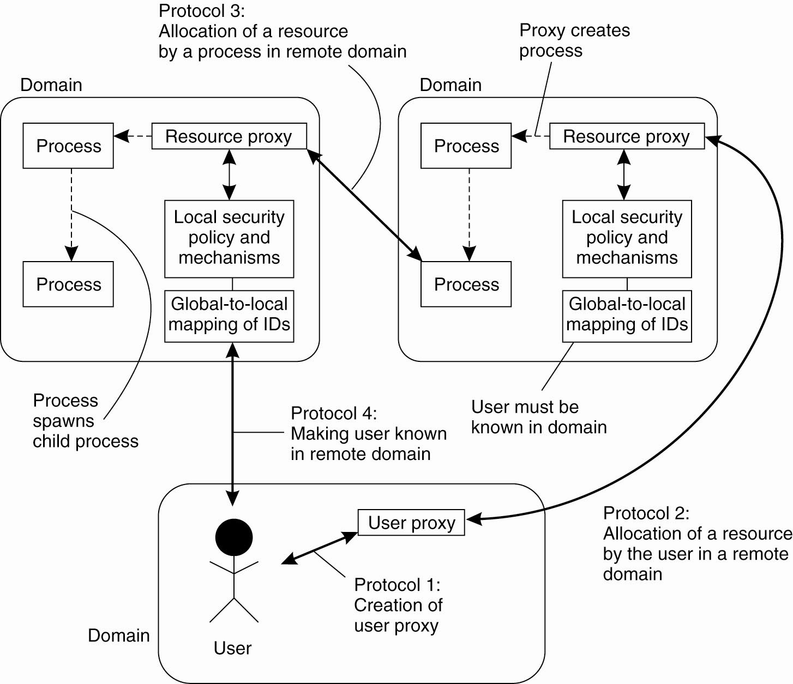
Design Issues
Three design issues when considering security:
- Focus of Control.
- Layering of Security Mechanisms.
- Simplicity.
Design Issue: Focus of Control
Three approaches for protection against security threats.
(a) Protection against invalid operations
(b) Protection against unauthorized invocations.
(c)
Protection against unauthorized users.
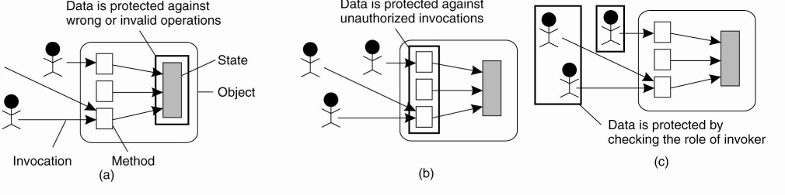
Design Issue: Layering of Security Mechanisms
Decision required as to where the security mechanism is to be placed.
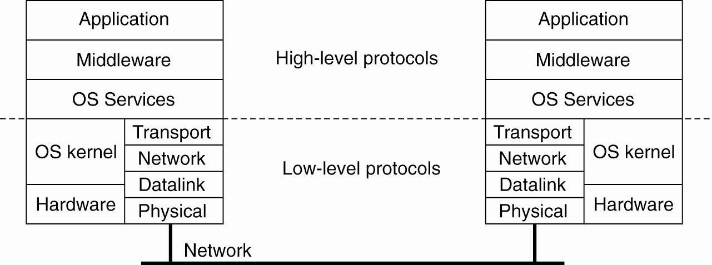
Trust and Security
A system is either secure or it is not.
Whether a client considers a system to be secure is a matter of trust.
Layer in which security mechanisms are placed depends on the trust a client has in how secure the services are in any particular layer.
Example
Several sites connected through a wide-area backbone service.
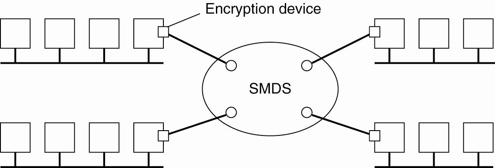
Switched Multi-megabit Data Service (SMDS)
If the encryption mechanisms cannot be trusted, additional mechanisms can be employed by clients to provide the level of trust required (e.g., using SSL (Secure Sockets Layer).
Secure Sockets Layer and can be used to securely send messages across a TCP connection.
Distribution of Security Mechanisms
The Trusted Computing Base (TCB) is the set of services/mechanisms within a distributed system required to support a security policy.
Reduced Interfaces for Secure System Components (RISSC)
Prevents clients and their applications from direct access to critical services. (Neumann 1995)
Any security-critical server is placed on a separate machine isolated from end-user systems using low-level secure network interfaces.
Clients and their applications run on different machines and can access the secured server only through these network interfaces.
The principle of RISSC as applied to secure distributed systems.
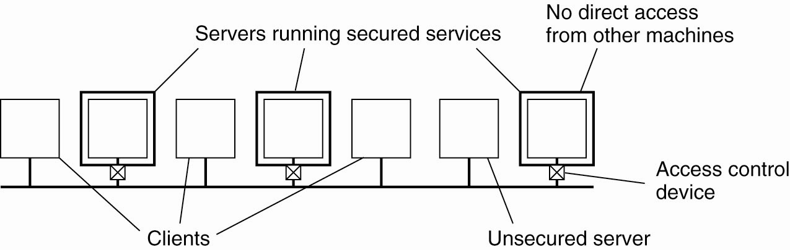
Design Issue: Simplicity
Designing a secure computer system is difficult, regardless of whether it is also a DS.
Using a few simple mechanisms that are easily understood and trusted to work is the ideal situation.
o Real world - introducing security mechanisms to an already complex system can make matters worse.
o However, this is still a design goal to aim for!
Security Mechanisms
Fundamental technique within any distributed systems security environment: Cryptography.
A sender S wanting to transmit message m to a receiver R.
The sender encrypts its message into an unintelligible message m', and sends m' to R.
R must decrypt the received message into its original form m.
Three kinds of Intruders and eavesdroppers in communication.
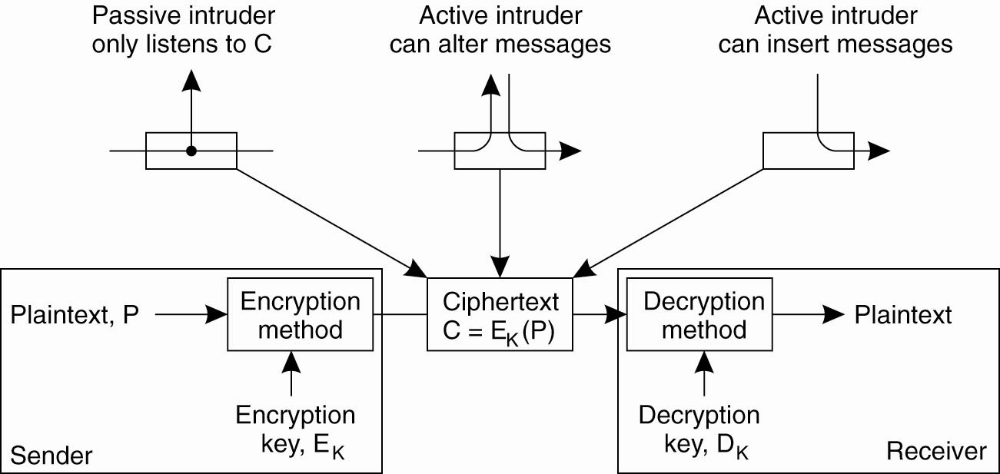
Original form of the message that is sent is called the plaintext, P
Encrypted form is referred to as the ciphertext, illustrated as C.
Notation to relate plaintext, ciphertext, and keys.
C = EK(P) denotes that the ciphertext C is obtained by encrypting the plaintext P using key K.
P = DK(C) is used to express the decryption of the ciphertext C using key K, resulting in the plaintext P.
Types
of Cryptosystems:
Symmetric: often
referred to as conventional cryptography,
defined as:
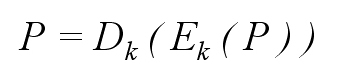
o Symmetric cryptosystems => referred to as secret-key or shared-key systems
1. because the sender and receiver are required to share the same key,
2.
this shared key must be kept secret; no one else is allowed to see the key.
3.
Use the notation KA,B to denote a key shared by A and
B.
Asymmetric: often referred to as public-key
cryptography, defined as:
The
keys for encryption and decryption are different, but together form a unique
pair.
There
is a separate key KE for encryption and one for
decryption, KD , such that
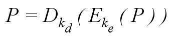
- One of the keys in an asymmetric cryptosystem is kept private; the other is made public.
- Notation 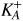to denote a public key belonging to A, and 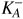as its corresponding private key.
Notation used in cryptography
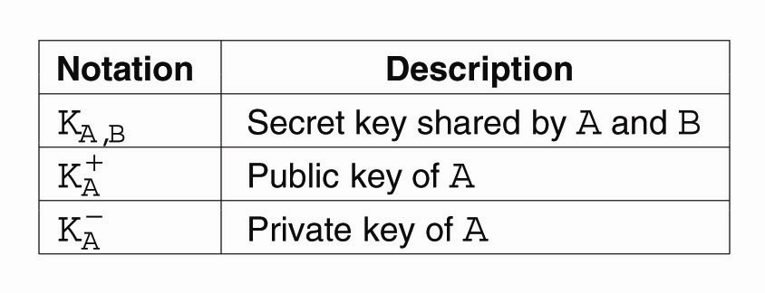
Introducing Alice, Bob & Co.
Alice and Bob are the good guys.
Chuck and Eve are usually the bad guys.
Example 1: Bob and Alice
- She should use Bob's public key to encrypt the message.
- Because Bob is the only one holding the private decryption key, he is also the only person that can decrypt the message.
Example 2: Bob and Alice Redux
- Bob wants to know for sure that the message he just
received actually came from
- If Bob can successfully decrypt a message using
Hash (One-Way) Functions
A hash function H takes
a message m of arbitrary length as input and
produces a bit string h having a
fixed length as output:
h = H( m )
Given H and m, h is easy to compute.
However, given H and h, it is
computationally infeasible to compute m.
That is, the function only works One-Way.
Weak Collision Resistence: given m and h = H( m ), it is hard to find another m, say, m2, such that m and m2 produce the same h.
Strong Collision Resistence: Given H, it is infeasible
to find an m and an m2 such that H( m ) and H( m2 ) produce the same
value.
Similarly:
- For any encryption function E, it should be computationally infeasible to find the key K when given the plaintext P and associated ciphertext C = EK(P)
- Analogous to collision resistance, when given a plaintext P and a key K, it should be effectively impossible to find another key K' such that EK(P) = EK' (P).
Symmetric Cryptosystems: DES
Example of a cryptographic algorithm: Data Encryption Standard (DES) (detailed example)
- Used for symmetric cryptosystems
- DES is designed to operate on 64-bit blocks of data.
- A block is transformed into an encrypted (64 bit) block of output in 16 rounds, where each round uses a different 48-bit key for encryption.
- Each of these 16 keys is derived from a 56-bit master key (see figure).
- Before an input block starts its 16 rounds of encryption, it is first subject to an initial permutation, of which the inverse is later applied to the encrypted output leading to the final output block.
(a) The principle of DES. (b) Outline of one encryption round.
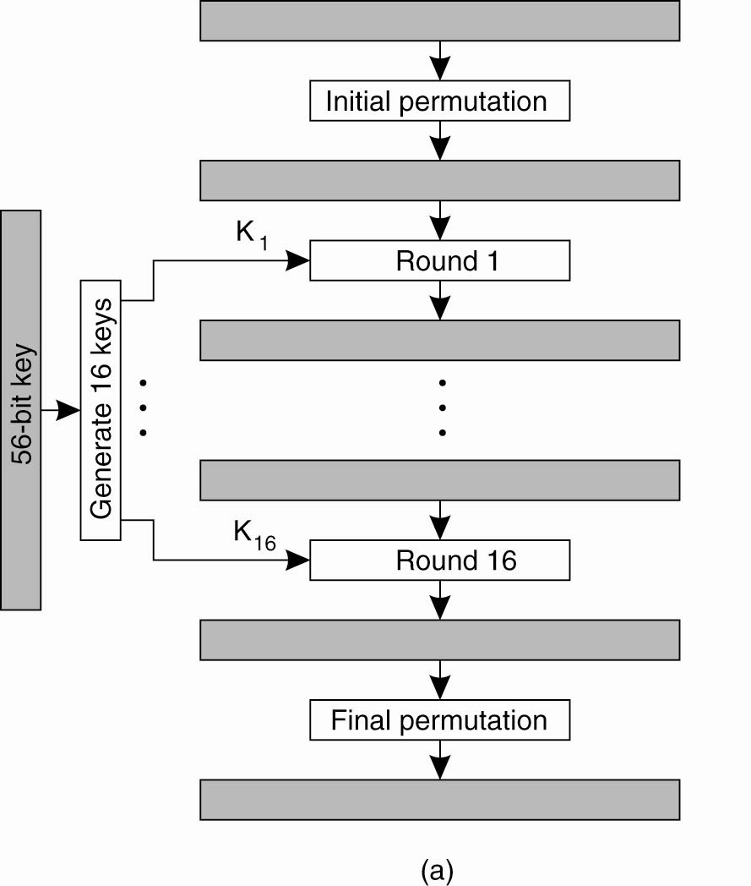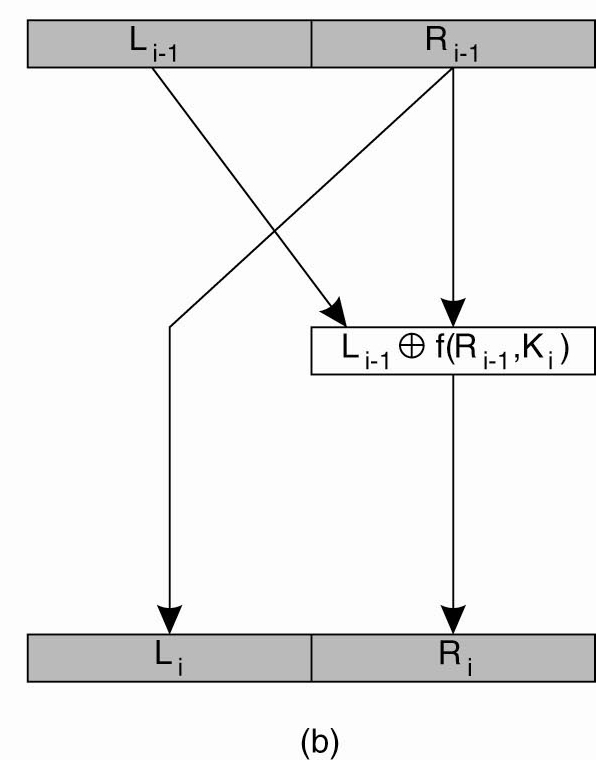
- Each encryption round i takes the 64-bit block produced by the previous round i - 1 as its input.
- The 64 bits are split into a left part Li-1 and a right part Ri-1, each containing 32 bits.
- The right part is used for the left part in the next round, that is, Li = Ri-1.
Work is done in the mangler function f.
- This function takes a 32-bit block Ri-1 as input, together with a 48-bit key Ki, and produces a 32-bit block that is XORed with Li-1 to produce Ri.
o (XOR is an abbreviation for the exclusive or operation.)
- The mangler function
first expands Ri-1 to a 48-bit block and XORs it
with Ki.
- The result is partitioned into eight chunks of
six bits each.
- Each chunk is then fed into a different S-box, which is an operation that substitutes each of the 64 possible 6-bit inputs into one of 16 possible 4-bit outputs.
- The eight output chunks of four bits each are then combined into a 32-bit value and permuted again.
The 48-bit key Ki for round i is derived from the 56-bit master key as follows
- First, the master key is permuted and divided into two 28-bit halves.
- For each round, each half is first rotated one or two bits to the left, after which 24 bits are extracted.
- Together with 24 bits from the other rotated half, a 48-bit key is constructed.
Details of per-round key generation in DES.

Principle of DES is quite simple:
- Algorithm is difficult to break using analytical methods.
- Brute-force attack by simply searching for a key that will do the job has become easy as has been demonstrated a number of times.
- DES three times in a special encrypt-decrypt-encrypt mode with different keys, also known as Triple DES is much more safe and is still often used .
Public-Key Cryptosystems: RSA
- Public-key systems: RSA : named after its inventors: Rivest, Shamir, and Adleman (1978).
- Security of RSA - no methods are known to efficiently find the prime factors of large numbers.
- It can be shown that each integer can be written as the product of prime numbers.
- For example, 2100 can be written as
2100 = 2 x 2 x 3 x 5 x 5 x 7
making 2, 3, 5, and 7 the prime factors in 2100.
- Private and public keys are constructed from very large prime numbers (consisting of hundreds of decimal digits).
- Breaking RSA is equivalent to finding those two prime numbers.
- So far, this has shown to be computationally infeasible despite mathematicians working on the problem for centuries.
Generating the private and public key requires four steps:
1. Choose two very large prime numbers, p and q.
2. Compute n = p x q and z = (p 1) x (q 1).
3. Choose a number d that is relatively prime to z.
4. Compute the number e such that e x d = 1 mod z.
- One of the numbers, say d, can subsequently be used for decryption, whereas e is used for encryption.
- Only one of these two is made public, depending on what the algorithm is being used for.
Example 3: Bob and Alice
- She wants to ensure that no one but Bob can intercept and read her messages to him.
- RSA considers each message m to be just a string of bits.
- Each message is first divided into fixed-length blocks, where each block mi, interpreted as a binary number that should lie in the interval 0 mi < n.
- To encrypt message m, the sender calculates for each block mi the value 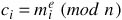, which is then sent to the receiver.
- Decryption at the receiver's side takes place by computing 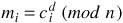.
- Note for the encryption, both e and n are needed, whereas decryption requires knowing the values d and n.
- RSA has the drawback of being computationally more complex.
- encrypting messages using RSA is approximately 1001000 times slower than DES, depending on the implementation technique used.
- Many cryptographic systems use RSA to exchange only shared keys in a secure way, but much less for actually encrypting "normal" data.
Hash Functions: MD5 (Rivest, 1992)
- MD5 is a hash function for computing a 128-bit, fixed length message digest from an arbitrary length binary input string.
- The input string is first padded to a total length of 448 bits (modulo 512), after which the length of the original bit string is added as a 64-bit integer.
- In effect, the input is converted to a series of 512-bit blocks.
The structure of MD5 algorithm.
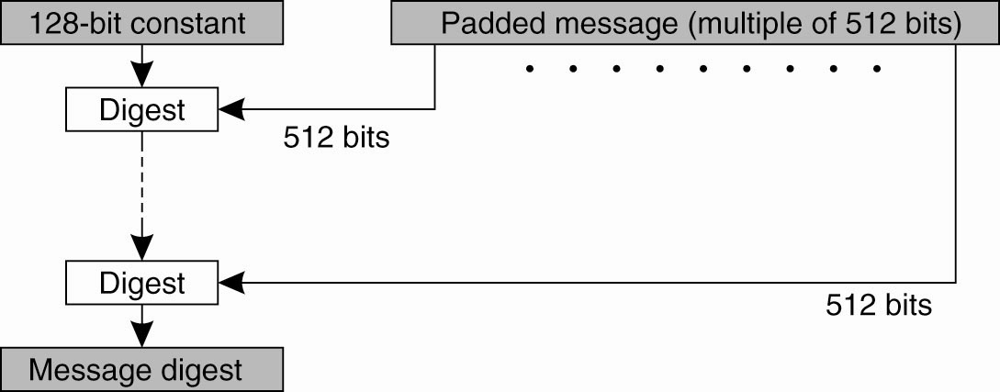
- Starting with some constant 128-bit value, the algorithm proceeds in k phases, where k is the number of 512-bit blocks comprising the padded message.
- During each phase, a 128-bit digest is computed out of a 512-bit block of data coming from the padded message, and the 128-bit digest computed in the preceding phase.
A phase in MD5 consists of four rounds of computations, where each round uses one of the following four functions:
F (x,y,z) = (x AND y) OR ((NOT x) AND z)
G (x,y,z) = (x AND z) OR (y AND (NOT z))
H (x,y,z) = x XOR y XOR z
I (x,y,z) = y XOR (x OR (NOT z))
- Each of these functions operates on 32-bit variables x, y, and z.
- Consider a 512-bit block b from the padded message that is being processed during phase k.
- Block b is divided into 16 32-bit subblocks b0,b1,...,b15.
- During the first round, function F is used to change four variables (denoted as p, q, r, and s, respectively) in 16 iterations
- These variables are carried to each next round, and after a phase has finished, passed on to the next phase.
- There are a total of 64 predefined constants Ci.
- The notation x <<< n is used to denote a left rotate: the bits in x are shifted n positions to the left, where the bit shifted off the left is placed in the rightmost position.
The 16 iterations during the first round in a phase in MD5.
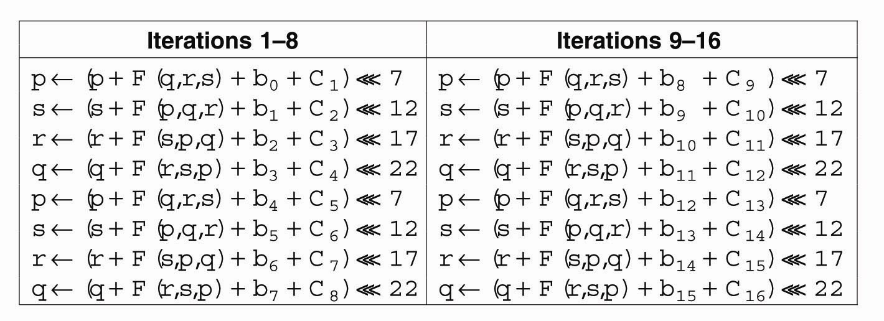
- The second round uses the function G in a similar fashion, whereas H and I are used in the third and fourth round, respectively.
- Each step thus consists of 64 iterations, after which the next phase is started, but now with the values that p, q, r, and s have at that point.
Secure Channels
DS Security: Two Major Issues
1.Secure communications between parties.
2.Authorization.
Secure channels protect against (protected by): (Voydock and
Kent, 1983)
Interception (confidentiality).
Modification (auth. and integrity).
Fabrication (auth. and integrity).
Note that authentication and message integrity as technologies rely on each other
A detailed description of the logics underlying authentication can be found in Lampson et al. (1992).
Applications of Cryptography
- Authentication.
- Message Integrity.
- Confidentiality.
Common
practice to use secret-key cryptography by means of session keys.
A
session key is a shared (secret) key that is used to encrypt messages for
integrity and possibly also confidentiality.
This
key is used only for as long as the channel exists.
When
the channel is closed, its associated session key is securely destroyed.
Authentication Based on a Shared Secret Key
Ensure data message integrity exchanged after authentication use secret-key cryptography with session keys.
Session key - is a shared (secret) key that is used to encrypt messages for integrity
Generally used only for as long as the channel exists.
Example: Bob and Alice Again
- Alice and Bob are abbreviated by A and B, respectively, and their shared key is denoted as KA,B.
- One party challenges the other to a response that can be correct only if the other knows the shared secret key.
- also known as challenge-response protocols.
- Bob sends a challenge RB to
Such a challenge could take the form of a random number.
Authentication based on a shared secret key, using a challenge response protocol.
Note: R is a random number.

- When Bob receives the response KA,B.(RB) to his challenge RB, he can decrypt the message using the shared key again to see if it contains RB.
If
so, he then knows that
She sends a challenge RA (message 4), which Bob responds to by returning KA,B.(RA), shown as message 5.
- When
Things
can go wrong:
Consider
an "optimization" of the authentication protocol in which the number
of messages has been reduced from five to three, as shown below.
If
Likewise, Bob returns his response to that challenge, along with his own challenge in a single message.
Example: Bob and Alice Taking Shortcuts
Optimization of
the Authentication based on a shared secret key, but using three instead of
five messages.

Idea:
- If
- Bob returns his response to that challenge, along with his own challenge in a single message
This protocol can easily be defeated by a reflection attack.
- A reflection attack is a potential way of attacking a challenge-response authentication system which uses the same protocol in both directions.
- The basic idea is to trick the target into providing the answer to its own challenge.
The general attack outline is as follows:
1. The attacker initiates a connection to a target.
2. The target attempts to authenticate the attacker by sending it a challenge.
3. The attacker opens another connection to the target, and sends the target this challenge as its own.
4. The target responds to that challenge.
5. The attacker sends that response back to the target ("reflects" it) on the first connection.
NOTE: If the authentication protocol is not carefully designed, the target will accept that response as valid, thereby leaving the attacker with one fully-authenticated channel connection (the other one is simply abandoned).
Example: Bob and Chuck When Things Go Wrong
The reflection attack. - Chuck wants Bob to think he is
- Chuck's goal is to set up a channel with Bob so
that Bob believes he is talking to
- Chuck can establish this if he responds correctly to a challenge sent by Bob
o e.g, by returning the encrypted version of a number that Bob sent.
- Without knowledge of KA,B., only Bob can do such an encryption, and this is precisely what Chuck tricks Bob into doing.
1.
Chuck
starts out by sending a message containing
2. Bob returns his challenge RB and the response KA,B(RC) in a single message.
3. Chuck needs to prove he knows the secret key by returning KA,B(RB) to Bob.
o He does not have KA,B.
o He attempts to set up a second channel to let Bob do the encryption for him.
4. Chuck sends A and RB in a single message as before, but now pretends that he wants a second channel. This is shown as message 3
The reflection attack.
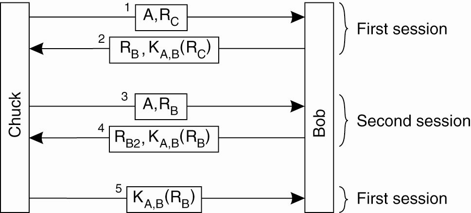
5. Bob not recognizing that he, himself, had used RB before as a challenge, responds with KA,B(RB) and another challenge RB2, shown as message 4.
6. At that point, Chuck has KA,B(RB) and finishes setting up the first session by returning message 5 containing the response KA,B(RB), which was originally requested from the challenge sent in message 2.
Mistake 1: the two parties in the new version of the protocol were using the same challenge in two different runs of the protocol.
Better Design: always use different challenges for the initiator and for the responder.
- In general, letting the two parties setting up a secure channel do a number of things identically is not a good idea.
Mistake 2: Bob gave away valuable information in the form of the response KA,B(RC) without knowing for sure to whom he was giving it.
- Not violated in the original protocol, in which
More on design principles for protocols can be found in Abadi and Needham (1996).
Authentication Using a
Problem with a shared secret key for authentication: scalability.
- Given N hosts - each host is required to share a secret key with each of the other N - 1 hosts
- System as a whole must manage N (N - 1)/2 keyes
- Each host has to manage N - 1 keys.
Alternative: use a centralized approach by means of a Key Distribution Center (KDC).
- This KDC shares a secret key with each of the hosts
- No pair of hosts is required to have a shared secret key as well.
- Using a KDC requires that we manage N keys instead of N (N - 1)/2
- If
- The KDC hands out a key to both Alice and Bob that they can use for communication,
Principle of using a KDC.

- The KDC returns a message containing a shared secret key KA,B that she can use.
- The message is encrypted with the secret key KA,KDC that
- The KDC sends KA,B to Bob, but now encrypted with the secret key KB,KDC it shares with Bob.
Drawbacks :
- The KDC is required to pass Bob the key.
Solution: ticket
- KDC passes KB,KDC(KA,B) back to
- The message KB,KDC(KA,B) is also known as a ticket.
- It is
- Note that Bob is still the only one that can make sensible use of the ticket, as he is the only one besides the KDC who knows how to decrypt the information it contains.
Using a
ticket and letting

- Protocol is a variant of a well-known example of an authentication protocol using a KDC, known as the Needham-Schroeder authentication protocol, named after its inventors (Needham and Schroeder, 1978).
The Needham-Schroeder protocol is a multiway challenge-response protocol and works as follows.
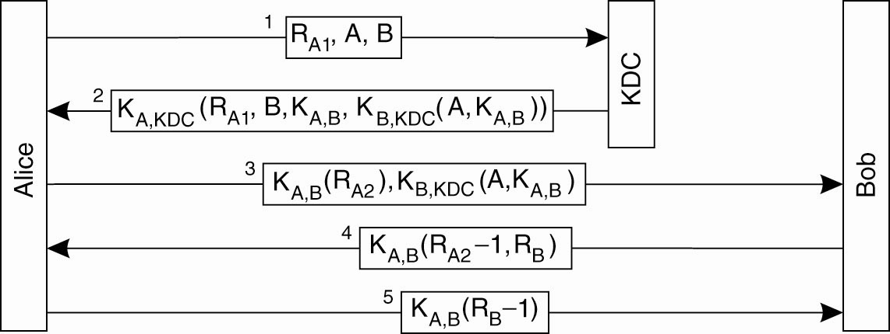
- When
- The KDC responds by giving her the ticket KB,KDC(KA,B), along with the secret key KA,B that she can subsequently share with Bob.
The
challenge RA1 that
A nonce is a random number that is used only once, such as one chosen from a very large set.
Purpose of a nonce is to uniquely relate two messages to each other
e.g. message 1 and message 2.
by including RA1 again in message 2,
Message 2 also contains B, the identity of Bob.
By
including B, the KDC protects
- After the KDC has passed the ticket to
- Bob then decrypts the ticket to find the shared
key, and returns a response RA2 - 1 along with a challenge RB for
NOTE: by returning RA2 - 1 and not just RA2, Bob not only proves he knows the shared secret key, but also that he has actually decrypted the challenge.
This ties message 4 to message 3 in the same way that the nonce RA tied message 2 to message 1.
Weak Point:
- If Chuck got an old key KA,B, he could replay message 3 and get Bob to set up a channel.
- Bob will then believe he is talking to
- Need to relate message 3 to message 1 - make the
key dependent on the initial request from
Protection against malicious reuse of a previously generated session key in the Needham-Schroeder protocol.
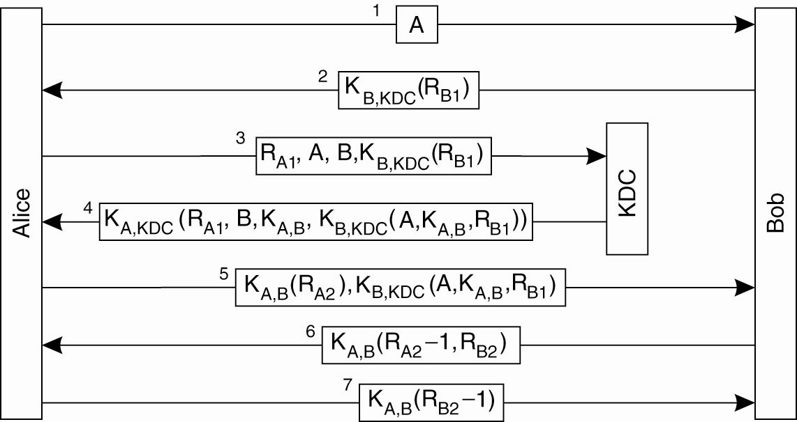
Solution: incorporate a nonce in the request sent by
- The nonce has to come from Bob: this assures Bob that whoever wants to set up a secure channel with him, will have gotten the appropriate information from the KDC.
- Bob will know for sure that the session key is
tied to the original request from
Authentication Using Public-Key Cryptography
Mutual authentication in a public-key cryptosystem.
- Note that the KDC is missing
- But, this assumes that some mechanism exists to verify everyones public key.
Example: Bob and Alice
- Both are in the possession of each other's public key.
Mutual authentication in a public-key cryptosystem.
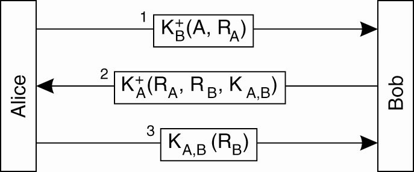
- Bob's must decrypt the message and return the
challenge to
- Because Bob is the only person that can decrypt
the message (using the private key that is associated with the public key
- When Bob receives
- He also generates a session key KA,B that can be used for further communication.
- Bob's response to
- Only
More on Secure Channels
In addition to authentication, a secure channel also requires that messages are confidential, and that they maintain their integrity.
For example:
Bob needs to be sure that he can
prove the message was sent by/from
Solution: Digital Signing
Digital Signatures
- Digital signing a message using public-key cryptography.
This is implemented in the RSA technology.
Note: the entire document is encrypted/signed - this can sometimes be a costly overkill.
Example:
o
Bob
has sold
o
The
whole deal was done through e-mail.
o
Issues:
o
o Bob needs to be assured that
Solution:
o
o
Association
between a message and its signature prevents that modifications to the message
will go unnoticed.
o
Ways to place digital signatures:
1. Use a public-key cryptosystem such
as RSA
o
When
o If she wants to keep the message
content a secret, she can use Bob's public key and send 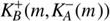, which combines m and the version signed by
Digital signing a message using public-key cryptography.
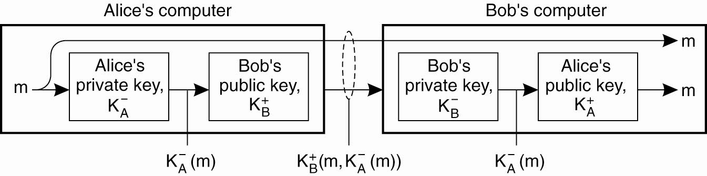
o Message arrives at Bob => he can
decrypt it using
o If the public key is owned by
o
Problems
with scheme:
1. Validity of
2.
o Once
3.
o Such an encryption may be costly in terms of processing requirements
o A cheaper more elegant scheme is to use a message digest.
Message
digest => is a
fixed-length bit string h that has been computed from an arbitrary-length
message m by means of a cryptographic hash function H.
o If m is changed to m', its hash H (m') will be different from h = H (m) so that it can easily be detected that a modification has taken place.
To
digitally sign a message:
1.
2. The encrypted digest is sent along
with the message to Bob.
Note that the message itself is sent as
plaintext: everyone is allowed to read it.
o If confidentiality is required, then the message should also be encrypted with Bob's public key.
Digitally signing a message using a message digest.
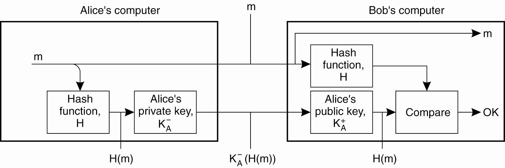
- When Bob receives the message
and its encrypted digest, he decrypts the digest with
o If the digest calculated from the
received message and the decrypted digest match, Bob knows the message has been
signed by
Session Keys
A
session key is a key used for encrypting one message or a group of messages in
a communication session.
During the establishment of a secure channel, after the authentication phase has completed, the communicating parties generally use a unique shared session key for confidentiality.
The session key is safely discarded when the channel is no longer used.
Secure Group
Communication
Design issue: How can you share secret information
between multiple members without losing everything when one member turns bad.
Confidentiality: Follow a simple (hard-to-scale)
approach by maintaining a separate secret key between each pair of members.
Replication: You also want to provide replication
transparency.
Apply secret sharing:
No
process knows the entire secret; it can be revealed only through joint
cooperation
Assumption:
at most k
out of N processes can produce an incorrect answer
At
most c <=
k processes have been corrupted
Note: We are dealing with a k fault tolerant process group.
Secure Replicated Servers
Secure and Transparent Replicated Servers
(Reiter et al. 1994)
Example:
Given
a securely replicated group of servers
Each
server accompanies its response with a digital signature.
If
ri is the response from
server Si, let md (ri)
denote the message digest computed by server Si.
- This digest is signed with server Si's private key 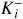.
Want
to protect the client against at most c corrupted servers => the server group should be
able to tolerate corruption by at most c servers, and still be capable of
producing a response that the client can put its trust in.
Let the replicated servers generate a secret valid signature with the property that c corrupted servers alone are not enough to produce that signature.
Consider
a group of five replicated servers that should be able to tolerate two corrupted
servers, and still produce a response that a client can trust.
Sharing
a secret signature in a group of replicated servers.
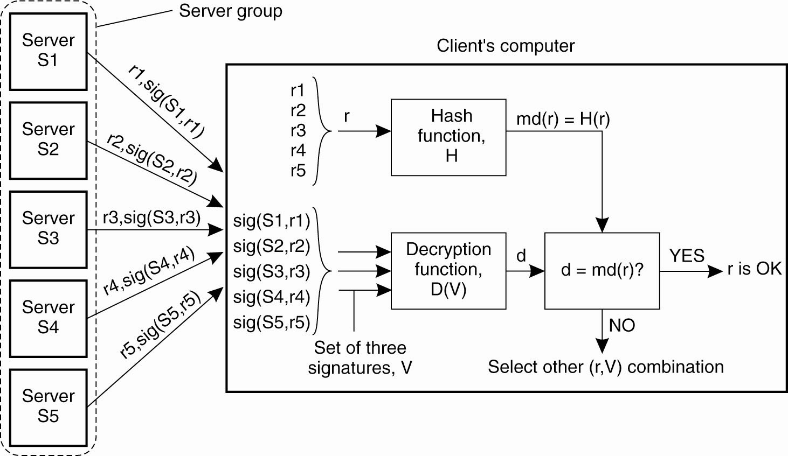
Let N = 5, c = 2
Each
server Si gets to see each request and responds
with ri
- Response ri is
sent along with digest md(ri), and signed with private key Ki-
.
- Signature is denoted as sig(Si, ri)
= Ki-
(md(ri)).
Client uses special decryption function D that
computes a single digest d from three signatures:
d = D(sig(S,r), sig(S,r), sig(S,r))
If d = md(ri) for
some ri,
ri is
considered correct
Also known as (m,n)-threshold
scheme.
(with
m = c + 1, n = N)
There
are 5!/(3!2!)=10 possible combinations of three
signatures that the client can use as input for D.
If
one of these combinations produces a correct digest md
(ri) for some response ri, then the client can consider ri
as being correct.
- It can trust that the response has been produced by at least three honest servers.
Example: Kerberos (Steiner et al., 1988)
Kerberos
is a network authentication protocol.
It
is designed to provide strong authentication for client/server applications by
using secret-key cryptography.
- Kerberos was developed at
M.I.T. and is based on the Needham-Schroeder authentication protocol.
- Two different versions of
Kerberos- version 4 (V4) and version 5 (V5).
- V5 being more flexible and
scalable.
Two different components:
Authentication Server (AS) - responsible for handling a login request from a user.
- AS authenticates a user and
provides a key that can be used to set up secure channels with servers.
Ticket
Granting Service (TGS) -
sets up secure channels.
- The TGS hands out special messages, known as tickets, that are used to convince a server that the client is really who he or she claims to be.
Example:
For
The ticket
that is returned by the AS contains the identity of
Authentication in Kerberos.

Message 1 -
Message 2 -
contains login name and is sent to the AS.
Message 3 -
contains the session key KA,TGS and the ticket
KAS,TGS(A,KA,TGS).
- To ensure privacy, message 3 is encrypted with the secret key KA,AS shared between Alice and the AS.
Message 4 -
workstation prompts
Message 5
PWD returned to workstation which generates shared key KA,AS
and find session key KA,TGS.
Message 6 to talk to Bob, she requests the TGS to generate a session key for Bob.
- The fact that
- Message alsocontains
a timestamp, t, encrypted with the secret key shared between Alice and the
TGS.
Setting
up a secure channel with Bob
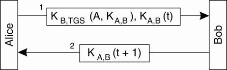
1.
2. When Bob decrypts the ticket, he
notices that
He
also finds the secret key KA,B, allowing him to verify
the timestamp.
At
that point, Bob knows he is talking to Alice and not someone maliciously
replaying message 1.
By
responding with KA,B(t + 1), Bob proves to
Access Control
Access rights is referred to as access control, whereas authorization is about granting access rights
Authorization
versus Authentication
Authentication: Verify the claim that a subject says it is S: verifying the identity of a subject
Authorization: Determining whether a subject is permitted certain services from an
object
Note: authorization
makes sense only if the requesting subject has been authenticated
Simple
model of access control:
Subjects issue a request to access an
object.
Processes
acting on behalf of users, but can also be objects that need the services of
other objects in order to carry out their work.
An object encapsulates its own state and implements the operations on that state.
Operations
of an object that subjects can request to be carried out are made available
through interfaces.
General model of controlling access to objects.
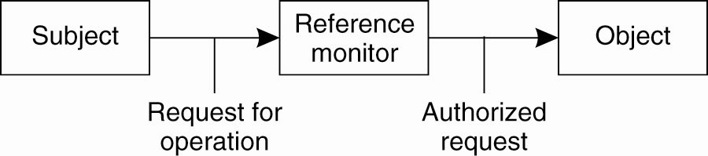
Reference Monitor records which subject may do what,
and decides whether a subject is allowed to have a specific operation carried
out.
- This monitor is called (e.g., by the underlying trusted operating system) each time an object is invoked.
Access
Control Matrix
Essence: Maintain
an access
control matrix ACM
in which entry ACM[S,O] contains the permissible
operations that subject S can perform on object O
Issues:
System
may need to support thousands of users and millions of objects that require
protection
- Many entries in the matrix will be empty: a single subject will generally have access to relatively few objects.
Solutions:
Implementation (a): Each object O maintains an access control list (ACL): ACM[*,O]
describing the permissible operations per subject (or group of subjects)
Implementation (b): Each subject S has a capability: ACM[S,*] describing the permissible operations per object
(or category of objects)
Comparison between ACLs and
capabilities for protecting objects.
(a)
Using an ACL. (b) Using capabilities.
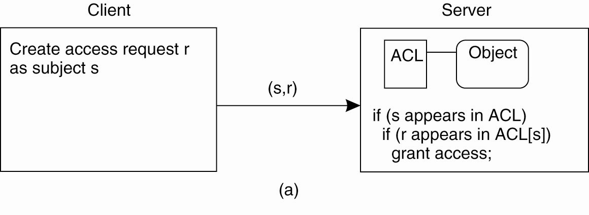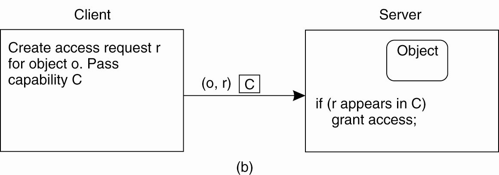
Protection
Domains
Issue: ACLs or capability lists can be very large.
Reduce information by means of protection domains: (Saltzer
and Schroeder, 1975)
Set
of (object, access rights) pairs
Each
pair is associated with a protection domain
For
each incoming request the reference monitor first looks up the appropriate
protection domain
Common implementation of protection domains:
Groups:
Users belong to
a specific group; each group has associated access rights
Roles:
Don't
differentiate between users, but only the roles they can play.
Your
role is determined at login time. Role changes are allowed.
Firewalls
Essence: Sometimes
it's better to select service requests at the lowest level: network packets.
Packets
that do not fit certain requirements are simply removed from the channel
Solution: Protect
your company by a firewall: it implements access control
A
common implementation of a firewall
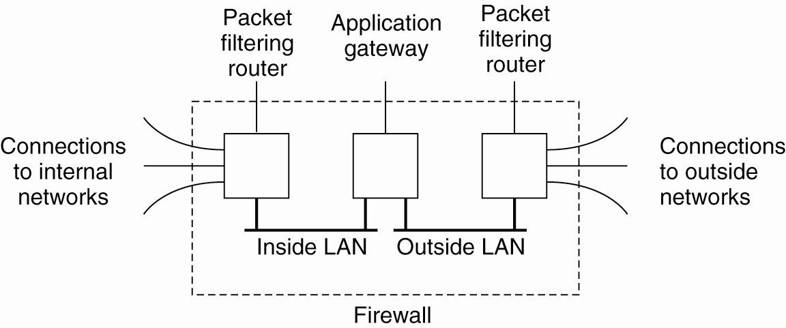
Two Types pf Firewalls:
Packet-filtering
gateway - operates as a
router and makes decisions as to whether or not to pass a network packet based
on the source and destination address as contained in the packet's header.
- Typically, the packet-filtering gateway shown on the outside LAN above would protect against incoming packets, whereas the one on the inside LAN would filter outgoing packets.
Application-level
gateway - this type of
firewall inspects the content of an incoming or outgoing message.
- e.g. mail gateway that discards
incoming or outgoing mail exceeding a certain size.
- e.g. filtering spam e-mail.
- e.g. proxy gateway - works as a front end to a specific kind of application, and ensures that only those messages are passed that meet certain criteria.
Secure
Problem:
Mobile
code is great for balancing communication and computation, but is hard to
implement a general-purpose mechanism that allows different security policies
for local-resource access.
Also,
we may need
to protect the mobile code (e.g., agents)
against malicious hosts.
Protecting an Agent
Most
important: append-only logs:
Data
can only be appended to the log; there is no way that data can be removed or
modified without the owner being able to detect this
There
is always an associated checksum. Initially,
Cinit = K+owner(N), with N a nonce.
Adding
data X by server S:
Cnew = K+owner(Cold, sig(S,X),S)
Removing
data from the log:
K-owner(C) -> Cprev, sig(S,X),S
allowing the owner to check integrity of X
Protecting a Host
Simple solution: Enforce a (very strict) single policy, and implement that by
means of a few simple mechanisms
Sandbox model: Policy:
Remote code is allowed access to only a pre-defined collection of resources and
services.
Mechanism:
Check instructions for illegal memory access and service access
Playground model: Same
policy, but mechanism is to run code on separate unprotected machine.
Observation: We need to be able to distinguish local from remote code before being
able to do anything
Refinement 1: We need to be able to assign a set of permissions to mobile code before
its execution and check operations against those permissions at all times
Refinement 2: We need to be able to assign different sets of permissions to different
units of mobile code => authenticate mobile code (e.g. through signatures)
(a)
A sandbox. (b) A playground.
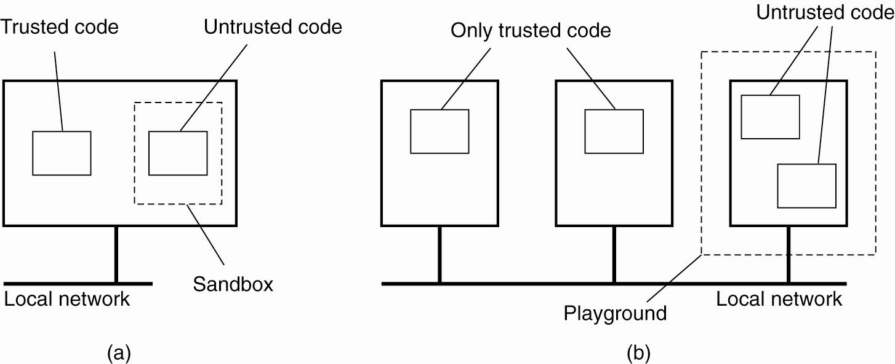
Maliciously
preventing authorized processes from accessing resources.
Issue: Distributed denial of service (DDoS)
Huge
collection of processes jointly attempt to bring down a networked service.
Attackers
succeed in hijacking a large group of machines which unknowingly participate in
the attack.
Specht and Lee
(2004) distinguish two types of attacks:
1. those aimed at bandwidth depletion
2. those aimed at resource depletion.
Solutions:
No single
method to protect against DDoS attacks. BUT
Continuously
monitor network traffic
- Starting at the egress routers where packets leave an
organization's network.
- Experience shows that by
dropping packets whose source address does not belong to the
organization's network we can prevent a lot of havoc.
- In general, the more packets can be filtered close to the sources, the better.
- Concentrate on ingress routers, that is, where traffic flows
into an organization's network.
- detecting an attack at an ingress
router is too late as the network will probably already be unreachable
for regular traffic.
- Better to have routers further in the Internet, such as in the networks of ISPs, start dropping packets when they suspect that an attack is going on.
- In general, a myriad of techniques need
to be deployed, whereas new attacks continue to emerge.
- A practical overview of the state-of-the-art in denial-of-service attacks and solutions can be found in Mirkovic et al. (2004).
Security Management
Key establishment and distribution
Secure group management
Authorization management
Key Establishment: Diffie-Hellman
(Diffie and
Hellman, 1976)
Observation: We can construct secret keys in
a safe way without having to trust a third party (i.e. a key distribution center (KDC)):
Alice
and Bob have to agree on two large numbers, n and g. Both numbers may be public.
1:
2: Bob sends (gy
mod n) to
3:
4: Bob computes KA,B = (gx mod n)y
= gxy mod n
The principle of Diffie-Hellman key exchange
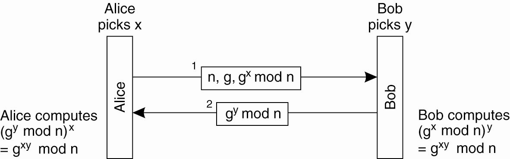
Key Distribution
Essence: If
authentication is based on cryptographic protocols, and we need session keys to
establish secure channels, who's responsible for handing out keys?
Secret keys:
Alice and Bob will have to get a
shared key.
They
can invent their own and use it for data exchange.
Alternatively,
they can trust a key distribution center (KDC) and ask it for a key.
Public keys:
But
she'll have to be sure about actually having Bob's public key, or she may be in
big trouble.
Use
a trusted certification
authority (CA) to
hand out public keys.
A
public key is put in a certificate, signed by a CA.
Another problem: How do we get the secret keys to
their new owners?
- If there are no keys available
to Alice and Bob to set up such a secure channel, it is necessary to
distribute the key out-of band.
- Alice and Bob will have to get
in touch with each other using some other communication means than the
network.
- For example, one of them may phone the other, or send the key on a floppy disk using snail mail.
(a)
Secret-key distribution.
(b)
Public-key distribution.
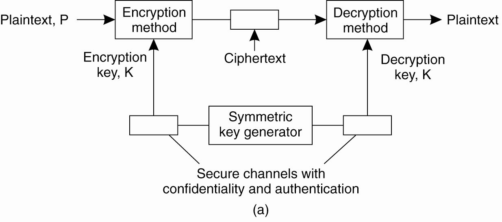
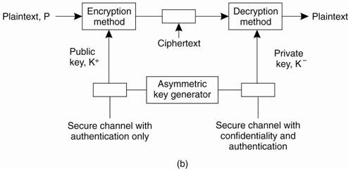
Public-key
cryptosystem (b), need
to distribute the public key in such a way that the receivers can be sure that
the key is paired to a claimed private key.
- although the public key itself may be
sent as plaintext, it is necessary that the channel through which it is
sent can provide authentication.
- The private key, needs to be sent across a secure channel providing authentication as well as confidentiality.
Secure Group Management
Structure: Group uses a key pair (K+G, K-G) for communication with nongroup members.
There
is a separate shared secret key CKG for internal
communication.
Assume
process P wants to join the group and contacts Q.
1: P generates a one-time reply pad RP, and a secret key KP,G. It sends a join request to Q,
signed by itself (notation: [JR]P),
along with a certificate containing its public key K+P
.
Securely admitting a new group member.
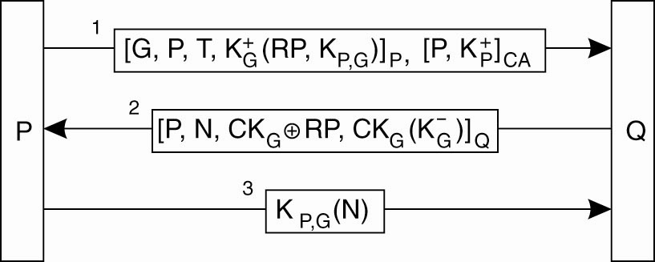
2: Q authenticates P, checks
whether it can be allowed as member.
It returns the group key CKG,
encrypted with the one-time pad, as well as the group's private key, encrypted
as CKG(K-G).
3: Q authenticates P and
sends back K P,G(N)
letting Q know that it has all the necessary keys.
Authorization Management
Issue: To avoid that each machine needs to
know about all users, use capabilities and attribute certificates to express
the access rights that the holder has.
In
Amoeba, restricted access rights are
encoded in a capability, along with data for an integrity
check to protect against tampering:
- A capability is a 128-bit
identifier, internally organized as shown below.
- First 48 bits are initialized by the
object's server when the object is created and effectively form a
machine-independent identifier of the object's server, referred to as the
server port.
- Amoeba uses broadcasting to locate the machine where the server is currently located.
A capability in Amoeba.
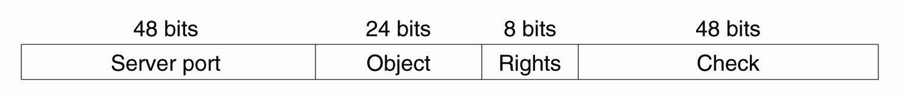
Next 24 bits
are used to identify the object at the given server.
o
Note
that the server port, along with the object identifier, form
a 72-bit system wide unique identifier for every object in Amoeba.
Next 8 bits
are used to specify the access rights of the holder of the capability.
- 48-bits check field is used to make a capability unforgeable, as we explain in the following pages.
When
an object is created, its server picks a random check field and stores it both
in the capability as well as internally in its own tables.
All
the right bits in a new capability are initially on, and it is this owner
capability that is returned to the client.
When the capability is sent back to the server in a request to perform an operation, the check field is verified.
To
create a restricted capability, a client can pass a capability back to the
server, along with a bit mask for the new rights.
o The server takes the original check field from its tables, XORs it with the new rights (which must be a subset of the rights in the capability), and then runs the result through a one-way function.
o The server then creates a new
capability, with the same value in the object field, but with the new rights
bits in the rights field and the output of the one-way function in the check
field. The new capability is then returned to the caller.
o The client may send this new capability to another process, if it wishes.
Generation
of a restricted capability from an owner capability
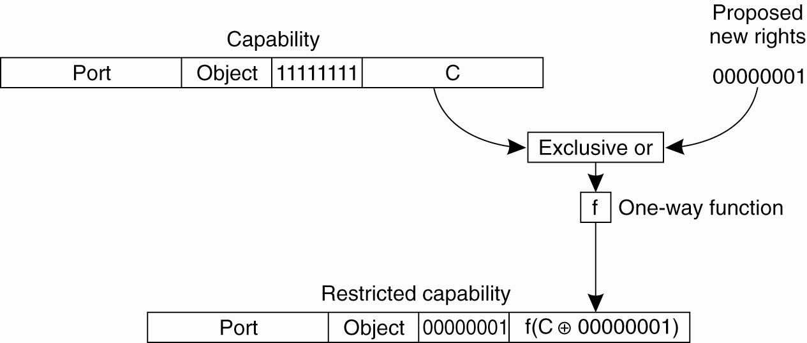
Delegation
Observation: A subject sometimes wants to delegate its privileges to an object O1, to
allow that object to request services from another object O2
Example: A
client tells the print server PS to fetch a file F from the file server FS to
make a hard copy => the client delegates its read privileges on F to PS
Nonsolution: Simply hand over your attribute
certificate to a delegate (which may pass it on to the next one, etc.)
Problem: To
what extent can the object trust a certificate to have originated at the
initiator of the service request, without forcing the initiator to sign every
certificate?
Solution: Ensure that delegation proceeds
through a secure channel, and let a delegate prove it got the certificate through
such a path of channels originating at the initiator.
General
approach to delegation (Neuman 1993) - make use of a proxy.
- A proxy in the context of
security in computer systems is a token that allows its owner to operate
with the same or restricted rights and privileges as the subject that
granted the token.
- A process can create a proxy
with at best the same rights and privileges it has itself.
- If a process creates a new proxy based on one it currently has, the derived proxy will have at least the same restrictions as the original one, and possibly more.
Neuman's scheme has two parts :
o
Let
A be the process that created the proxy.
- The first
part of the
proxy is a set 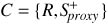,
consisting of a set R of access rights that have been delegated by A,
along with a publicly-known part of a secret that is used to authenticate
the holder of the certificate.
- The certificate carries the
signature sig (A,C) of
A, to protect it against modifications.
- The second
part contains
the other part of the secret, denoted as 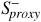.
- It is essential that is protected against disclosure when delegating rights to another process.
The
general structure of a proxy as used for delegation
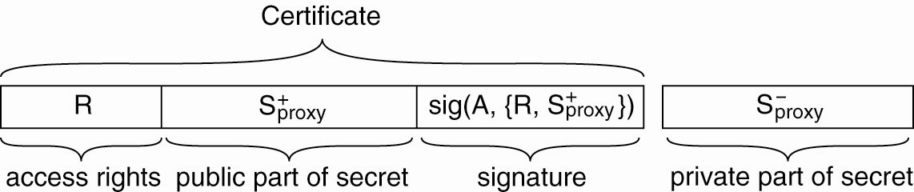
A
protocol for delegating and exercising rights:
- Assume that Alice and Bob share
a secret key KA,B that can be used for encrypting
messages they send to each other.
- There is no need to encrypt
this message: it can be sent as plaintext.
- Only the private part of the secret needs to be encrypted, shown as KA,B() in message 1.
Using
a proxy to delegate and prove ownership of access rights
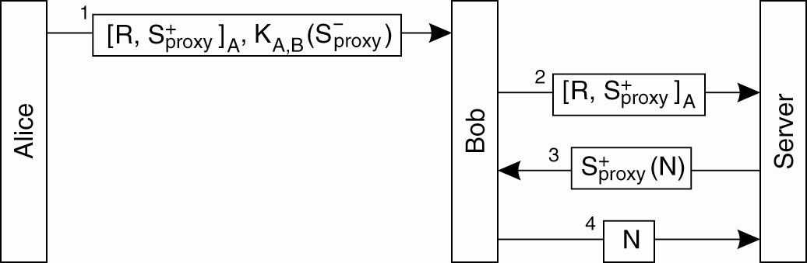
- Suppose that Bob wants an
operation to be carried out at an object that resides at a specific
server.
- Also, assume that
- Therefore, Bob hands over his credentials to the server in the form of the signed certificate [R,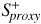]A.
- At that point, the server will
be able to verify that C has not been tampered with: any modification to
the list of rights, or the nasty question will
be noticed, because both have been jointly signed by
- However, the server does not
know yet whether Bob is the rightful owner of the certificate.
- To verify this, the server must use the secret that came with C.
- By decrypting (N) and returning N, Bob proves he knows the secret and is thus the rightful holder of the certificate.